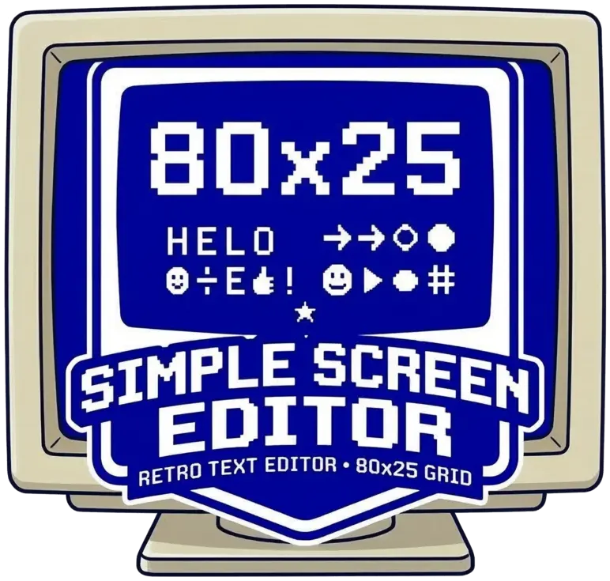
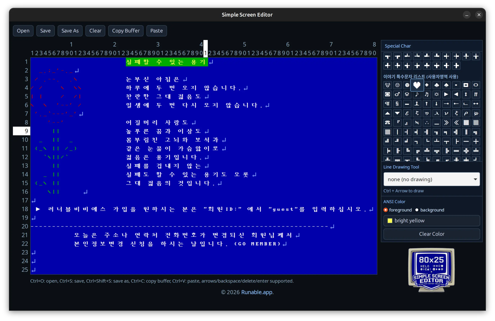

80x25 고정 그리드 텍스트 에디터
깃허브 저장소 보기Simple Screen Editor는 80x25 고정 텍스트 셀 환경에서 한글/영문 혼합 입력의 폭 정렬을 안정적으로 처리하는 GUI 스크린 편집기입니다.
편집 코어는 Go로 구현되어 있으며 데스크톱 셸은 Wails를 사용합니다. 실험용 도구를 넘어 재현 가능한 텍스트 셀 편집 기반을 만드는 데 초점을 둡니다.
일관된 셀 단위 편집을 위해 화면을 80열 x 25행으로 고정합니다.
문자 폭 인식을 기반으로 삽입/삭제 시 커서와 셀 배치를 안정적으로 유지합니다.
OS 클립보드 복사/붙여넣기를 지원해 실제 편집 흐름에서 바로 사용할 수 있습니다.
UTF-8 텍스트 파일 열기/저장을 지원하며 크로스플랫폼 테스트가 가능합니다.

정말 간단합니다. 실행 파일 하나만 있으면 됩니다. 터미널에서 아래처럼 입력해 바로 실행하거나, 해당 파일을 더블클릭해서 실행하세요.
simpleeditor별도 복잡한 설정 없이, 단일 실행 파일만으로 바로 사용할 수 있습니다.
Simple Screen Editor - A fixed 80x25 text grid editor with robust Korean/English width alignment.
Copyright (C) 2026 Runable.app
This program is free software: you can redistribute it and/or modify
it under the terms of the GNU General Public License as published by
the Free Software Foundation, either version 3 of the License, or
(at your option) any later version.
This program is distributed in the hope that it will be useful,
but WITHOUT ANY WARRANTY; without even the implied warranty of
MERCHANTABILITY or FITNESS FOR A PARTICULAR PURPOSE. See the
GNU General Public License for more details.
You should have received a copy of the GNU General Public License
along with this program. If not, see <https://www.gnu.org/licenses/>.
--- 한국어 ---
Simple Screen Editor - 한글/영문 폭 정렬을 안정적으로 처리하는 80x25 고정 텍스트 그리드 에디터.
Copyright (C) 2026 Runable.app
이 프로그램은 자유/무료 소프트웨어입니다. 여러분은 자유 소프트웨어 재단에서 공표한
GNU 일반 공중 사용 허가서 버전 3 또는 (여러분의 선택에 따라) 그 이후 버전의
조건에 따라 이 프로그램을 재배포하거나 수정할 수 있습니다.
이 프로그램은 유용할 것이라는 기대 아래 배포되지만, 어떠한 보증도 제공하지 않습니다.
상품성 또는 특정 목적 적합성에 대한 묵시적 보증조차 제공되지 않습니다.
자세한 내용은 GNU 일반 공중 사용 허가서를 참조하십시오.
GNU 일반 공중 사용 허가서 사본을 이 프로그램과 함께 받았어야 합니다.
받지 못했다면 <https://www.gnu.org/licenses/>를 참고하십시오.프로젝트가 도움이 되었다면 후원으로 개발 지속에 힘을 보태주세요.
오픈소스 프로젝트 후원하기